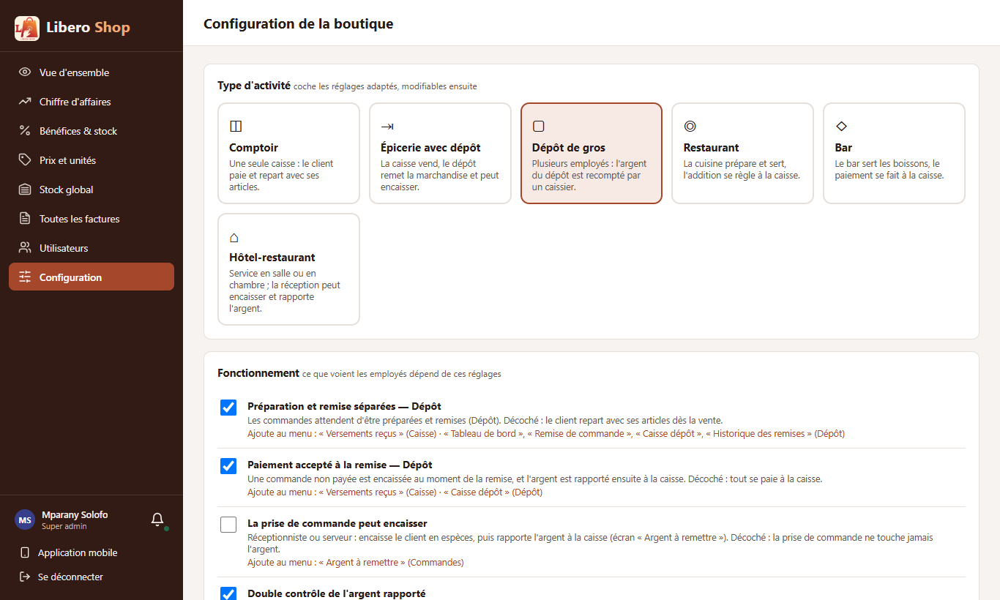
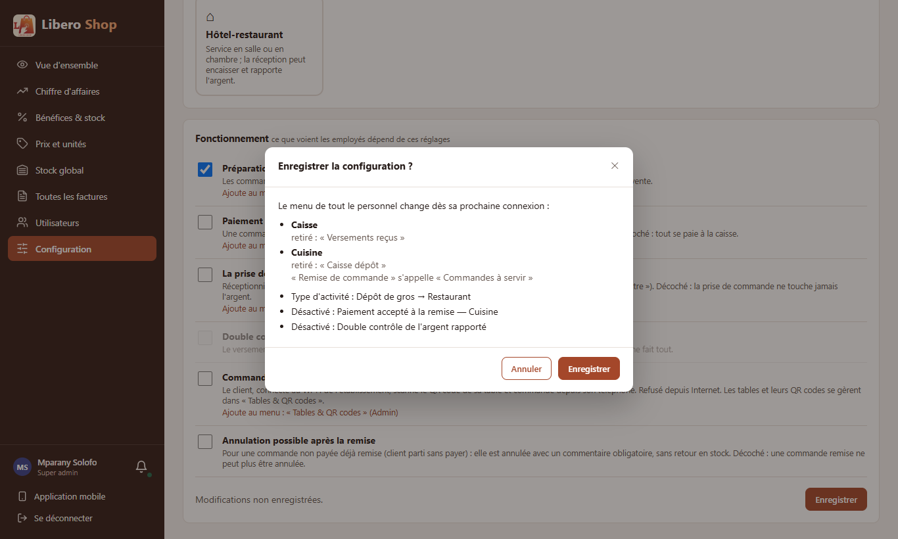

← Tous les comptes rendus de l'interface
UI-72Configuration de la boutique : dire ce qui change
Résumé
- Sous chaque réglage, une ligne de couleur dit quels écrans il ajoute au menu, et de qui : « Ajoute au menu : « Argent à remettre » (Commandes) ».
- « Enregistrer » n'enregistre plus tout de suite : une fenêtre résume les changements module par module (écrans ajoutés, retirés, renommés), puis le type et les réglages changés.
- On confirme ou on annule ; « Annuler » a le curseur, comme dans toutes les confirmations.
- Ces textes sont calculés à partir du menu lui-même : un écran ajouté plus tard au menu sera annoncé sans rien réécrire.
1. Le problème
Cocher « Restaurant » ou décocher « Paiement accepté à la remise » change le menu de tous les employés : la caisse du dépôt disparaît, « Remise de commande » devient « Commandes à servir ». Jusqu'ici, l'enregistrement était immédiat et rien ne disait ces conséquences.
2. Ce qui a été fait
Figure 1 — Le résumé compare les menus d'avant et d'après, module par module.
La même comparaison sert sous chaque réglage : on compare le menu réglage coché et réglage décoché. Un réglage qui change la façon de travailler sans toucher au menu (« Double contrôle », « Annulation après la remise ») n'a pas de ligne en plus : sa phrase d'explication suffit.
3. Le résultat en images
Mparany — administrateur

Figure 2 — Sous chaque réglage, en couleur, les écrans qu'il ajoute et le module concerné.

Figure 3 — Passer de « Dépôt de gros » à « Restaurant » : la caisse perd « Versements reçus », la cuisine perd « Caisse dépôt » et « Remise de commande » s'appelle « Commandes à servir ».
4. Tableau récapitulatif
| Fichier | Changement |
|---|---|
ui/…/core/config/settings-impact.ts | nouveau : écrans ajoutés, retirés, renommés entre deux configurations ; effet d'un réglage |
ui/…/features/admin/shop-settings.component.ts | ligne « Ajoute au menu » ; résumé avant d'enregistrer |
ui/…/shared/components/confirm-dialog.component.ts | accepte un détail sous la phrase (liste des changements) |
| Règle | Test |
|---|---|
| Rien à dire quand rien ne change | settings-impact.spec.ts |
| Remise non séparée : tout le module Dépôt et « Versements reçus » retirés | |
| Changer de type renomme les écrans (« Cuisine », « Commandes à servir ») | |
| Un réglage annonce les écrans qu'il ajoute et leur module | |
| Un réglage sans écran n'annonce rien |
Tests : interface au vert (282 tests). Aucun changement côté serveur.